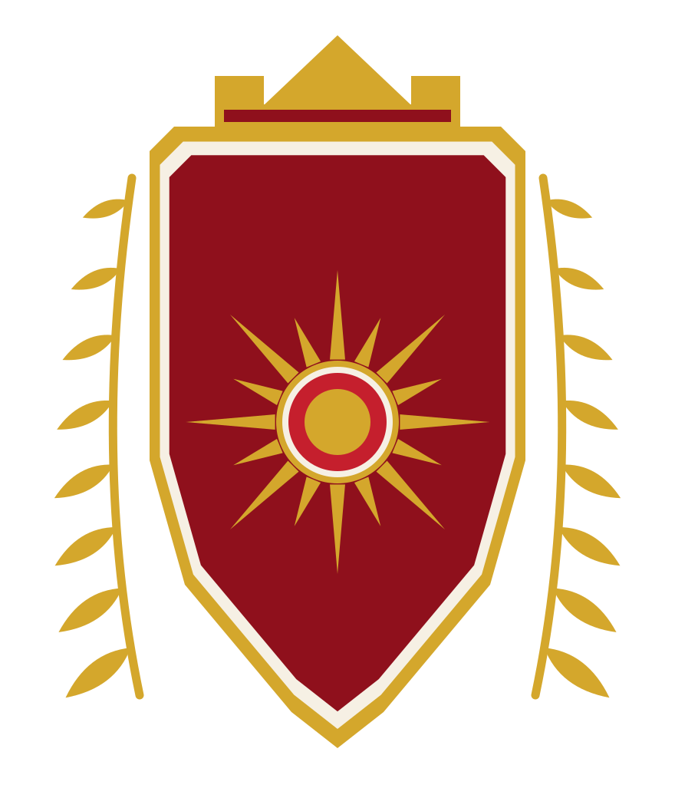
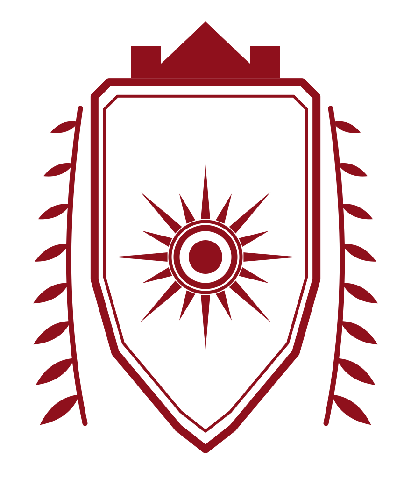
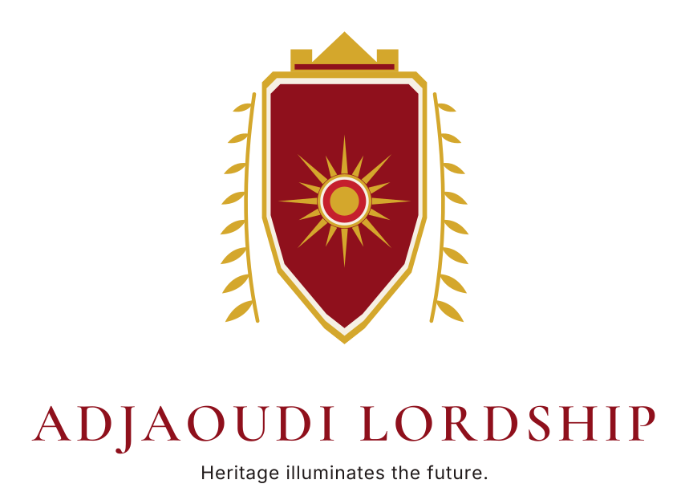
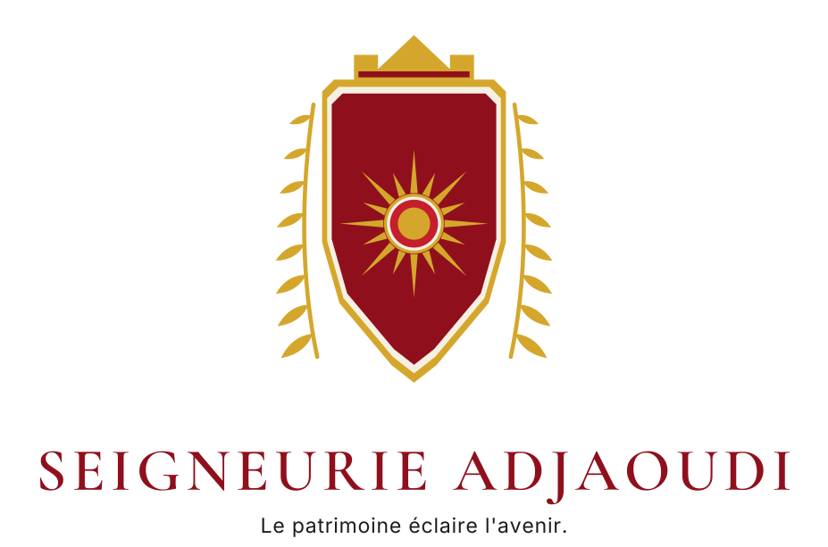
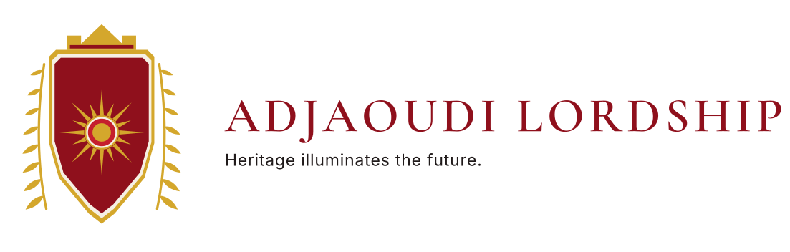
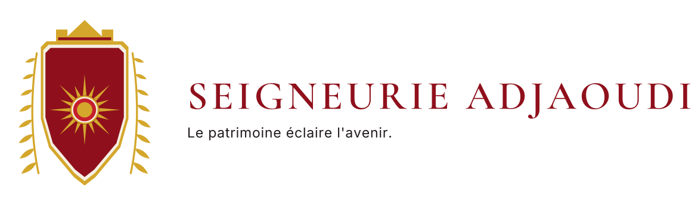
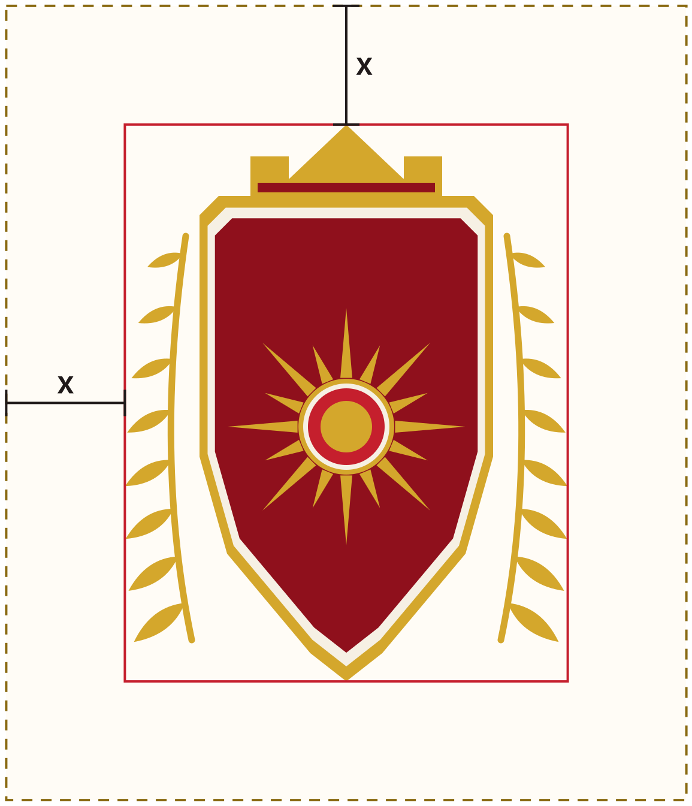

The mark and its variants
Four approved versions. They come out of one geometry file, so they cannot drift apart.




Signatures
The mark locked to the name. The lettering is converted to outlines, so a signature file needs no font installed to render correctly.




Palette
The two right-hand columns are measured contrast ratios. Antique Gold reaches 1.98:1 on ivory, which is below the 4.5:1 that body text needs — so gold is used on this site for rules, the sun and solid areas, and a darker gold (#6A4A0E, 7.12:1 on ivory) is used wherever gold has to be read as text.
| Colour | Code | Usage | On ivory | On crimson |
|---|---|---|---|---|
| Cramoisi Adjaoudi | #8F101C | Primary background, headings, coat of arms | 8.19:1 | 1.00:1 |
| Radiant Red | #C51F2D | Accents, buttons, active states | 5.13:1 | 1.60:1 |
| Antique Gold | #D4A72C | Sun, rules, premium details | 1.98:1 | 4.15:1 |
| Ivory | #F6F0E4 | Soft backgrounds, breathing space | 1.00:1 | 8.19:1 |
| Charcoal | #201A1A | Body text, contrast | 15.12:1 | 1.85:1 |
Typography
Cormorant Garamond
Headings, semi-bold, restrained capitals. Variable weight 300–700. Embedded in the site as WOFF2 under the SIL Open Font License — no request leaves the page to fetch it.
Inter
Interface and body text, regular to semi-bold. Variable weight 100–900, embedded the same way. Aptos remains the substitute for office documents, where no web font is available.
Clear space and minimum sizes
Clear space is x = half the diameter of the sun as drawn = 198 units on an artwork whose drawn width is 739 units, that is 27% of the width of the mark on every side. Below, the solid red rectangle is the drawn bounding box, measured from the rendered artwork; the dashed gold rectangle is the clear space.

Minimum sizes
Shown at their true size on screen. Below these, the sun closes up and the laurel turns to mush.
In print: 15 mm for the shield alone. Always keep the proportions, the contrast and the vertical orientation.
Prohibited uses
- Stretch or distort the mark.
- Tilt or rotate it.
- Recolour it outside the approved variants.
- Add a drop shadow, a glow or an outline.
- Place it on a busy photograph without an ivory or crimson plate.
- Change the number of rays. There are sixteen, and there is no version with any other number.
- Separate the sun from the shield.
- Present the mark as a governmental, official or heraldic-authority symbol.
What the emblem does not claim
The coat of arms is a brand emblem, designed for this House. It is not claimed to be granted, matriculated, registered or recognised by any heraldic authority, and it represents no state, government or administration. It carries no title, rank or precedence. Before any trade-mark filing or commercial use, the name and the emblem should be reviewed by a lawyer in the country where the House chooses to operate — that review is the client’s to commission, and nothing on this page substitutes for it.